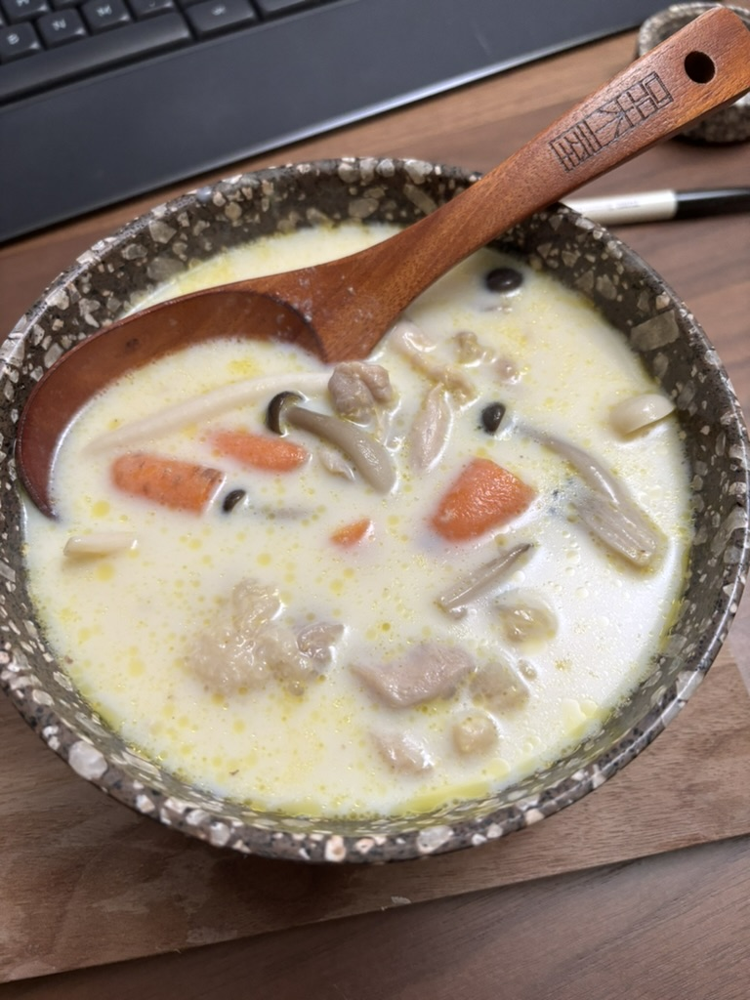
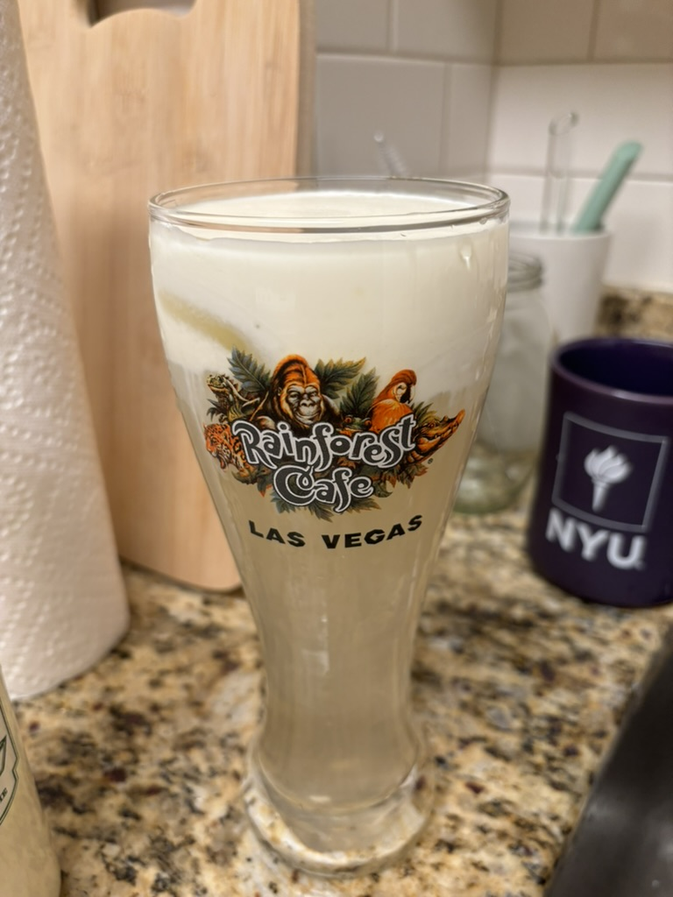
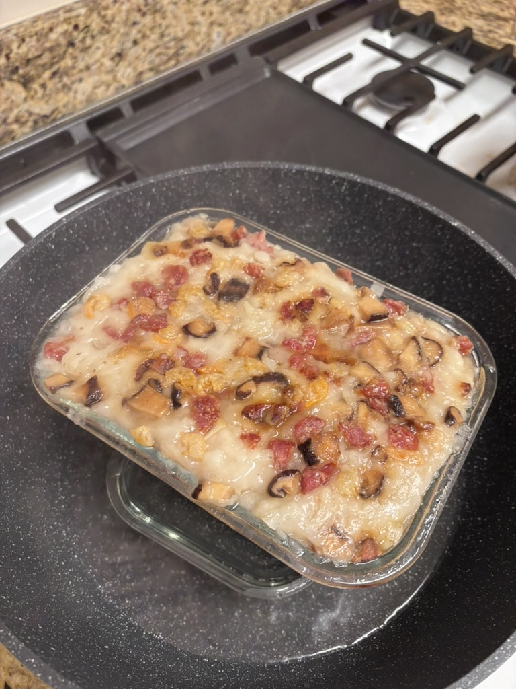

豆乳雞湯
材料
- 雞湯 400ml
- 無糖豆漿 600ml
- 去皮雞髀肉 1件
- 紅蘿蔔 大半條
- 硬豆腐 半盒
- 本菇 半包
- 鹽 適量
- 胡椒粉 適量
步驟
- 先將雞肉切片，用鹽和胡椒粉醃大約15分鐘
- 清雞湯煮滾後放入雞髀肉，煮約5分鐘。之後加菜煮沸
- 最後加入無糖豆漿和豆腐。煮多約5分鐘。可再加鹽和胡椒粉調味

起司奶蓋
材料
- Cream Cheese 100g
- 牛奶 83g
- 煉奶 15g
- 鹽 ¼至½茶匙
- Heavy Cream 100g
步驟
- Cream cheese分次加奶攪勻
- 加煉奶
- 加鹽
- 無水無油容器加heavy cream打至挺身

蘿蔔糕（參考馬田食譜）
材料
- 粒粒
- 臘肉 少量（與臘腸相等）
- 臘腸 一條
- 瑤柱 兩粒
- 冬菇 10g
- 蝦米 20g
- 白蘿蔔 一條
- 水
- 滴雞精 一包
- 粘米粉 130g
- 澄麵粉/粟粉 35g
- 鹽 5g
- 糖 3g
- 麻油 適量
- 白胡椒粉 適量
步驟
- 粒粒s：暖水浸：瑤柱、冬菇、蝦米；浸軟後切粒。臘肉、臘腸切粒。麻油炒香粒粒備用
- 粉：粘米粉＋澄麵粉/粟粉＋鹽＋糖
- 蘿蔔切粗&幼絲（小心切到手），煮透出水後，水裝起備用
- 蘿蔔水＋海味水＋滴雞精＋水＝400g，慢慢加粉調成粉漿
- 組合！大煲慢火慢慢撈勻，落胡椒粉、麻油，慢慢撈到半流體狀
- 倒入容器蒸約一小時至粉漿不沾筷子。切塊煎香即成🤤